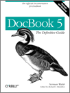
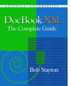

DocBook.org
DocBook.org
“The Source for Documentation”
DocBook.orgThis is the official home page for DocBook 5: The Definitive Guide. The definitive guide is the official documentation for DocBook. The latest edition covers DocBook V5.0. It was published by O'Reilly Media and XML Press.
In support of DocBook users everywhere, this book and its source XML are available online. Of course, you're always free to buy a copy, too, if you'd like :-).
The previous edition of the book covered both SGML and XML and was aimed at the DocBook
V3.x and
DocBook V4.x schemas. It's no longer being actively developed, and has gone out of
print, but it is
still available online.
DocBook XSL: The Complete Guide by Bob Stayton and published by Sagehill Enterprises is the definitive guide to using the DocBook XSL stylesheets. It provides the necessary documentation to realize the full potential of DocBook publishing. It covers all aspects of DocBook publishing tools, including installing, using, and customizing the stylesheets and processing tools.
Also
available: buttons, shirts, and other swag.
Wear your duck on your sleeve! Well, your chest anyway.
JetBrains supports the DocBook project with IntelliJ IDEA. SyncRO Soft SRL supports the DocBook project with <oXygen/> xml editor.
DocBook V5.1 is the official OASIS Standard release of DocBook V5.1. It is a RELAX NG reimplementation of DocBook. This release adds support for assemblies (modular documentation) and resolves a number of issues. See DocBook Version 5.1 at OASIS.
DocBook XSD V5.1CR3 represents an attempt to hand-craft a useful XML Schema for DocBook V5.1. This schema remains non-normative, and more permissive than the normative DocBook schema, but (hopefully) represents a significant improvement over the previous, machine-generated attempt.
DocBook V5.1CR3 is the third candidate release of DocBook V5.1. Version 5.1CR3 an error in the content model of sect1.
Version 5.1CR3 is available in RELAX NG.
This is the “work in progress” edition of DocBook 5: The Definitive Guide. Version 1.4.14 documents DocBook V5.1CR3.
DocBook 5.1b6 and a few related schemas (Website, Slides, and Forms) published. A number of changes have been made to the website; please report any problems that you encounter.
DocBook XSD V5.0b2 and Publishers XSD V1.0b2 represent an attempt to hand-craft useful XML Schemas for DocBook V5.0 and Publishers V1.0. These schemas remain non-normative, but (hopefully) represent a significant improvement over the previous, machine-generated attempts.
This is the free, online special edition of DocBook 5: The Definitive Guide for the DocBook Publishers schema. Version 1.1.0 is an experimental version that documents Publishers V1.1b1 (based on DocBook V5.1b3).
DocBook Publishers V1.1b1 is a test release of DocBook Publishers based on DocBook V5.1b3.
This is the free, online special edition of DocBook 5: The Definitive Guide for the DocBook Publishers schema. Version 1.0.0 is an experimental version that documents Publishers V1.0 (based on DocBook V5.0).
Transclusion in DocBook explores requirements, use cases, and possible solutions for a variety of transclusion scenarios in DocBook.
This is the free, online edition of DocBook 5: The Definitive Guide. Version 1.0.1 documents DocBook V5.0.
DocBook V5.1b2 is the second test release of
DocBook V5.1. Version 5.1 fixes a number of bugs and adds support
for topic-based authoring (through a topic element and
support for “assemblies”).
Version 5.1b2 is available in RELAX NG and non-normatively in DTD and W3C XML Schema formats.
DocBook V5.1b1 is the first test release of
DocBook V5.1. Version 5.1 fixes a number of bugs and adds support
for topic-based authoring (through a topic element and
support for “assemblies”).
Version 5.1b1 is available in RELAX NG and non-normatively in DTD and W3C XML Schema formats.
This is the official version of DocBook 5: The Definitive Guide published by O'Reilly Media and XML Press. It covers DocBook V5.0.
DocBook V5.0 is the official OASIS Standard release of DocBook V5.0. It is a RELAX NG reimplementation of DocBook. It is a significant redesign that attempts to remain true to the spirit of DocBook.
Version 5.0 is available in RELAX NG and non-normatively in DTD and W3C XML Schema formats.
This is the “work in progress” second edition of DocBook: The Definitive Guide for DocBook V4.x. Version 2.0.17 documents DocBook XML V4.5. The only change in version 2.0.17 is in the license terms; it is now available under the GNU FDL without any “Cover Text” restrictions.
DocBook is general purpose XML and SGML document type particularly well suited to books and papers about computer hardware and software (though it is by no means limited to these applications).
Version 4.5 is available in XML and SGML. Unofficial RELAX NG and W3C XML Schema versions are also available.
Version 4.5 is an OASIS Standard.